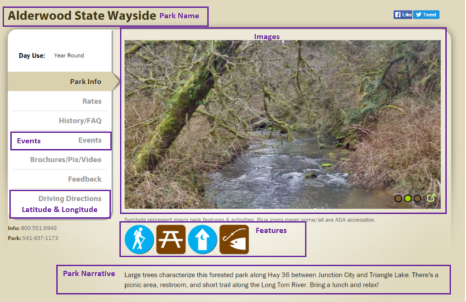

No API Key is needed to use the Oregon State Parks API, the only requirements that anything used is credited to and presented as coming from OPRD. The one restriction given is that you cannot use the OPRD shied and wordmark without separate permission. Make sure to visit the site to read the terms and contact them with any questions Oregon State Parks.
"Artwork, photos, images and text (“data”) stored on oregonstateparks.org may be subject to copyright. All use of data from this website must be credited “courtesy Oregon Parks and Recreation Department,” and must be presented as originating from OPRD."
Calls to this API are fairly straightforward and are all GET requests that return a JSON object as a string.
There are five ways to get data from the API:
For example, if you visit the page for Alderwood State Wayside this is where you can find the information available through the API.
